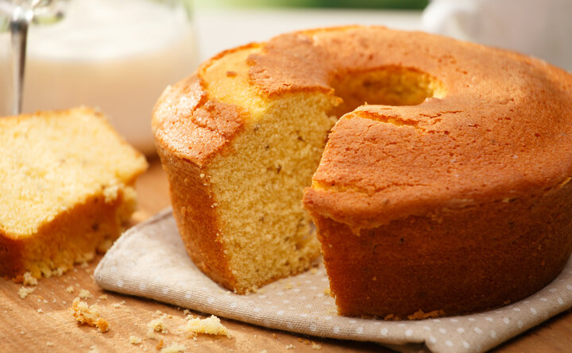

descriçao:
nada
ingredientes
- 3 ovos
- 2 xícaras de chá de açúcar
- 2 xícaras de chá de fubá
- 3 colheres de sopa de farinha de trigo
- 1/2 copo de óleo
- 1 copo de leite
- 1 colher de sopa de fermento em pó
modo de preparo
- Em um liquidificador, adicione os ovos, o açúcar, o fubá, a farinha de trigo, o óleo, o leite e o fermento, depois bata até a massa ficar lisa e homogênea.
- Despeje a massa em uma forma untada e polvilhada.
- Leve para assar em forno médio preaquecido por 40 minutos.